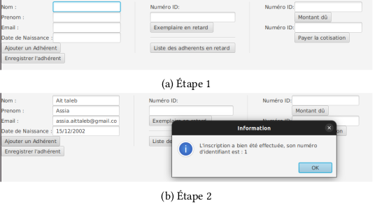

Fonctionnement technique

Objectif du projet
Simuler le fonctionnement d'une médiathèque : gestion des adhérents, des ouvrages, des emprunts et pénalités, avec une attention particulière portée à la clarté du code et à l'ergonomie de l'interface.
Technologies utilisées
- Java - pour la logique métier et les classes
- JavaFX - pour l'interface graphique (FXML)
- UML - pour la modélisation
- SHA-256 - pour la sécurité des mots de passe
Structure du projet
| Fichier | Rôle |
|---|---|
| Adherent.java | Classe représentant un utilisateur |
| Bibliotheque.java | Modèle principal |
| interface.fxml | Structure visuelle de l'interface |
| MediathequeController.java | Contrôleur JavaFX |
Fonctionnalités
- Inscription et connexion des adhérents
- Consultation du catalogue d'ouvrages
- Emprunt, restitution et prolongation de livres
- Gestion des pénalités pour retards
- Interface graphique fluide et intuitive
- Sécurisation des mots de passe avec hachage SHA-256

Ce que j'ai appris
- Créer une interface fluide et intuitive avec JavaFX
- Traduire des exigences fonctionnelles en modèles UML
- Utiliser les exceptions pour gérer les erreurs utilisateurs
- Protéger les mots de passe avec SHA-256
- Penser l'expérience utilisateur dès la conception
Auteurs
Assia AIT TALEB & Hoda DOUBLI
GM3 - INSA Rouen Normandie
Ce que j'en retiens
Ce projet m'a fait comprendre que le code n'est qu'une partie de l'équation. L'interface, l'expérience utilisateur, la clarté des interactions... tout compte. Et JavaFX m'a permis de créer quelque chose de visuellement agréable et fonctionnel. Un bon équilibre entre technique et design.